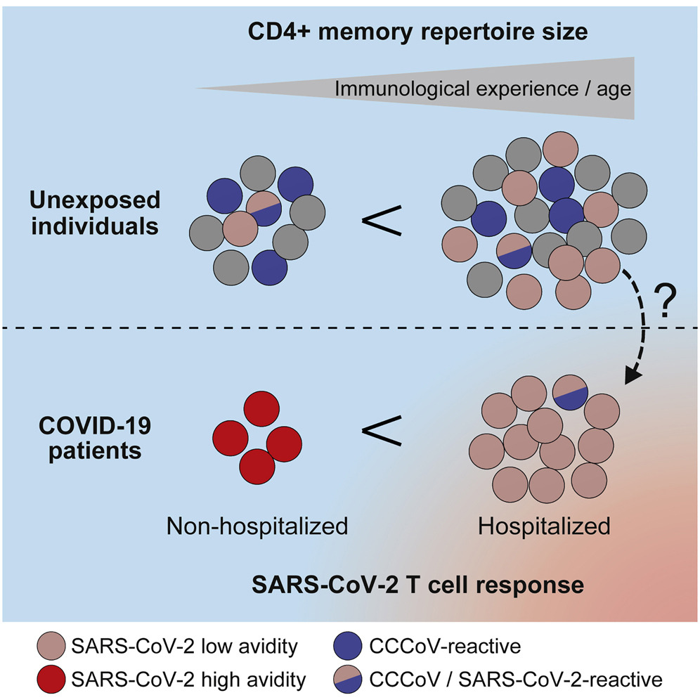
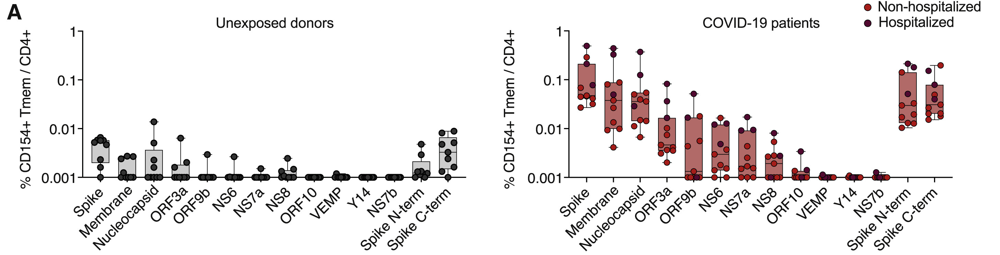
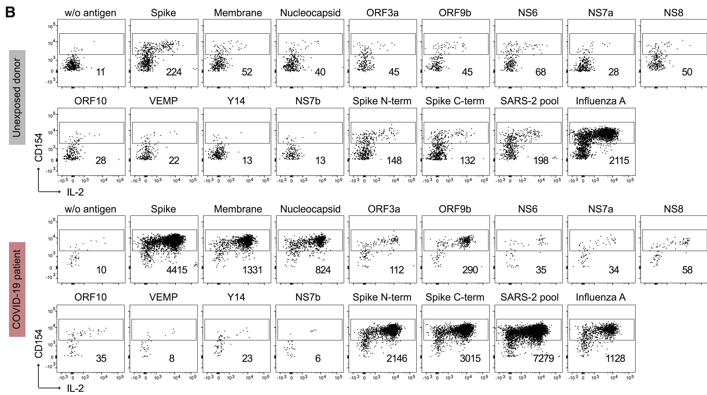

Low-Avidity CD4+ T Cell Responses to SARS-CoV-2 in Unexposed Individuals and Humans with Severe COVID-19
introduction
- COVID-19 displays remarkable disparity of clinical symptoms
- CD4+ T cells are central organizers of anti-viral immune responses
- COVID-19 patients seem to develop robust Th1-like SARS-CoV-2-specific CD4+ T cell responses focused on spike, membrane, and nucleocapsid proteins (Grifoni et al., 2020)
introduction
- Increased frequencies of SARS-CoV-2-specific CD4+ and CD8+ T cells are found in severe disease in some (Anft et al., 2020), but not in other studies (Braun et al., 2020).
- Several studies show that a significant fraction of un-exposed donors possess SARS-CoV-2-reactive CD4+ memory T cells
- These memory T cells exhibit cross-reactivity against selected peptides with homology to related common cold corona virus (CCCoV)
introduction
- What types of immune responses to SARS-CoV-2 are protective and which are detrimental ?
- Does exaggerated or dysfunctional CD4+ T cell responses contribute to the observed hyperinflammation in severe COVID-19 patients ?
- What are the factors determining the magnitude as well as the quality of the CD4+ T cell response and and how this relates to predisposition and/or manifestation of severe COVID-19?
subject
antigen-specific T cell enrichment to characterize SARS-CoV-2-specific T cells
- healthy donors (n = 55)
- COVID-19 patients (n = 56)
including their avidity and clonality as well as their cross-reactivity to CCCoV and other viruses
Results
what are the target proteins of the SARS-CoV-2-reactive T cells ?
T cells reactive against a panel of 12 different SARS-CoV-2 proteins. SARS-CoV-2-reactive CD4+ T cells were detected based on the upregulation of CD154+ (CD40L) after 7 h ex vivo stimulation of PBMC
what are the target proteins of the SARS-CoV-2-reactive T cells ?
 activation percentage between covid and unexposed

Single-Cell RNA Sequencing Identifies Similar T Cell Clusters in COVID-19 and Unexposed Donors

Single-Cell RNA Sequencing Identifies Similar T Cell Clusters in COVID-19 and Unexposed Donors

Increased expression of the acute and chronic activation markers Ki-67 and CD38 and declined with time after infection

Low-Avidity SARS-CoV-2-Reactive Memory T Cells in Unexposed Donors

Low-Avidity SARS-CoV-2-Reactive Memory T Cells in Unexposed Donors

functional avidity via stimulation of expanded SARS-CoV-2-reactive memory T cells with decreasing antigen concentrations

Pearson correlation between the proportion of memory cells within the antigen-specific T cells

SARS-CoV-2-Reactive Memory T Cells

Memory T Cell Response to Common Cold Coronaviruses

Memory T Cell Response to Common Cold Coronaviruses

CCCoV-Cross-Reactive T Cells Do Not Contribute Significantly to SARS-CoV-2 Immunity in COVID19 Patients

CCCoV-Cross-Reactive T Cells Do Not Contribute Significantly to SARS-CoV-2 Immunity in COVID19 Patients

CCCoV-Cross-Reactive T Cells Do Not Contribute Significantly to SARS-CoV-2 Immunity in COVID19 Patients

Increased, but Unfocused and Low-Avidity CD4+ T Cell Response against SARS-CoV-2 in Severe Disease

Increased, but Unfocused and Low-Avidity CD4+ T Cell Response against SARS-CoV-2 in Severe Disease

Increased, but Unfocused and Low-Avidity CD4+ T Cell Response against SARS-CoV-2 in Severe Disease

summary
- Newly encountered antigens, such as SARS-CoV-2 are present within a natural memory T cell repertoire, most likely because of TCR-intrinsic cross-reactivity.